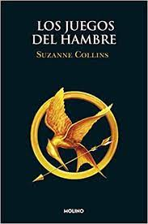
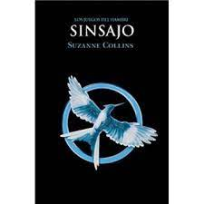

Sinopsis

Es la hora. Ya no hay vuelta atrás. Los juegos van a comenzar. Los tributos deben salir a la Arena y luchar por sobrevivir. Ganar significa Fama y riqueza, perder significa la muerte segura... ¡Que empiecen los Septuagésimo Cuartos Juegos del Hambre! Un pasado de guerras ha dejado los 12 distritos que dividen Panem bajo el poder tiránico del Capitolio. Sin libertad y en la pobreza, nadie puede salir de los límites de su distrito. Sólo una chica de 16 años, Katniss Everdeen, osa desafiar las normas para conseguir comida. Sus prinicipios se pondrán a prueba con Los juegos del hambre, espectáculo televisado que el Capitolio organiza para humillar a la población. Cada año, 2 representantes de cada distrito serán obligados a subsistir en un medio hostil y luchar a muerte entre ellos hasta que quede un solo superviviente. Cuando su hermana pequeña es elegida para participar, Katniss no duda en ocupar su lugar, decidida a demostrar con su actitud firme y decidida, que aún en las situaciones más desesperadas hay lugar para el amor y el respeto.
Katniss Everdeen ha sobrevivido a Los juegos del hambre. Pero el Capitolio quiere venganza. Contra todo pronóstico, Katniss Everdeen y Peeta Mellark siguen vivos. Aunque Katniss debería sentirse aliviada, se rumorea que existe una rebelión contra el Capitolio, una rebelión que puede que Katniss y Peeta hayan ayudado a inspirar. La nación les observa y hay mucho en juego. Un movimiento en falso y las consecuencias serán inimaginables.
Sinopsis

Katniss Everdeen ha sobrevivido dos veces a los Juegos del Hambre, pero no está a salvo. La revolución se extiende y, al parecer, todos han tenido algo que ver en el meticuloso plan, todos excepto Katniss.
Aun así su papel en la batalla final es el más importante de todos. Katniss debe convertirse en el Sinsajo, en el símbolo de la rebelión... a cualquier precio.
Sobre el Autor
Suzanne Collins es la autora de la serie superventas de Gregor, que dio comienzo con Las tierras bajas. Sus revolucionarias novelas juveniles, Los Juegos del Hambre, En llamas y Sinsajo fueron superventas de The New York Times, recibieron reconocimiento en todo el mundo y sirvieron de inspiración para cuatro películas de éxito. Un año en la selva, su libro ilustrado sobre el tiempo que su padre pasó destinado en Vietnam, se publicó en 2013 y recibió el aplauso de la crítica. Hasta la fecha, sus libros se han traducido a cincuenta y tres idiomas.